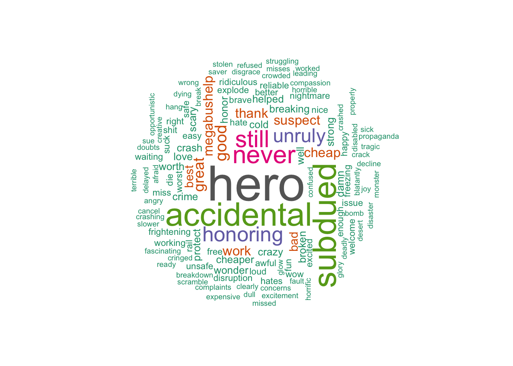

riding the mega
We built word clouds and word webs to convey the frequency and cooccurrance of words.
The most frequent negative words:
The most frequent positive words:
In our exploratory data analysis, we noticed that some days had many more tweets than other days. Why was everyone tweeting so much on these days?
April 13, 2015: 19 injured in Megabus crash on I-65 in Indiana
May 13, 2015: ‘Hero’ passenger subdues gunman who may have tried to take over Megabus
May 13, 2015: ‘Hero’ passenger subdues gunman who may have tried to take over Megabus